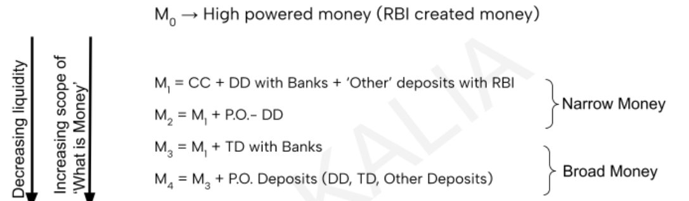
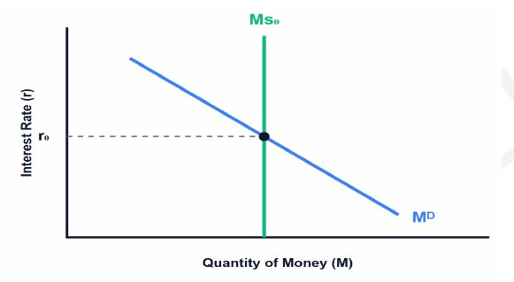

This chapter completes Chapter 6’s argument: make money expensive to cool AD.
Economy · GS Foundation · Chapter 8
Money and Monetary Policy: Supply, Demand, Cost and Tools
Handout only: no class slidesHandout pages 1-31No PYQs quoted
What money is and its properties, the evolution from gold to fiat, the RBI balance sheet and seigniorage, money supply and its measures (M0 to M4, NM1 to NM3), the money multiplier, money demand and the liquidity trap, the cost of money, the qualitative and quantitative tools (OMO, CRR, SLR, repo, reverse repo, MSF, SDF), flexible inflation targeting and the MPC, loan pricing (PLR to EBLR) and the recent tools.
Chapter map#
- Money and monetary policy
Money
- GA-MOE; DCW
- Value, preservation, authenticity, denomination
- Legal tender: notes, coins, CBDC
- Trust over law
Evolution
- Gold → representative → fiat
- Gov bonds: safe + liquid + replicable
- RBI promise backed by gov promise
RBI balance sheet
- Zero-cost liabilities (CiC)
- Seigniorage = net interest income
- Buy safe assets only
- Surplus: Bimal Jalan
Money supply
- Vertical MS curve
- M0, M1-M4, NM1-NM3
- MS = m · M0
- cdr and rdr
Money demand
- MDT ∝ P·Q ÷ v
- MDS ∝ 1/r
- Liquidity trap at r-min
Tools
- Qualitative: suasion, PSL, margins
- OMO, CRR, SLR
- Repo, reverse repo, MSF, SDF
- Corridor: MSF - Repo - SDF
Framework
- FIT 2015: 4% ± 2%
- MPC: 3 + 3, casting vote
- Transmission
Loan pricing
- PLR → Base 2010 → MCLR 2016 → EBLR 2019
- RDS, LTRO, VRRR, MSS
Exam lens: priority and PYQs#
What the handout stresses
| Signal in the handout | Where | Why it matters |
|---|---|---|
| Money = Generally Acceptable Medium of Exchange (GA-MOE); legal tender; trust overrides law | Sections 1-2 | The idea behind the rest of the chapter |
| RBI balance sheet: zero-cost liabilities, seigniorage, buy only safe assets; surplus to government (Bimal Jalan committee) | Section 3 | Starred statement |
| M0, M1-M4, and the new NM1, NM2, NM3 (Y.V. Reddy Committee, 1998) | Section 4 | Definitions and what is excluded |
| MS = m × M0; m falls with higher cdr and rdr | Section 5 | Formulas |
| MD = MDT + MDS; MS is vertical; liquidity trap at r-min | Section 6 | Concept plus graphs |
| Tools: OMO, CRR, SLR, Repo, Reverse repo, MSF, Bank Rate, SDF; corridor MSF-Repo-SDF | Section 8 | Statements and ceiling/floor |
| FIT 2015: 4% ± 2%; 6-member MPC (3 RBI + 3 external); Governor’s casting vote | Section 9 | Facts |
| Loan pricing: PLR → Base Rate (2010) → MCLR (2016) → EBLR (2019) | Section 10 | Chronology |
| Recent tools: RDS 2021, LTRO 2020, VRRR, SDF Apr 2022, MSS 2004 | Section 11 | Current-affairs hooks |
1 · What money is, and its four properties#
Money is a generally acceptable medium of exchange (GA-MOE). Barter needs a Double Coincidence of Wants (DCW): you must find someone who has what you want and wants what you have. As societies grow, DCW becomes “mathematically impossible”. Almost anything can be a medium of exchange in an isolated barter; to be money, most sellers in the economy must be willing to part with real goods for it.
Properties of money (what makes something generally acceptable)
| Property | Meaning |
|---|---|
| Value | It must have value itself: intrinsic (gold) or fiat (determined and enforced by a sovereign). It needs general demand and limited supply (you cannot offer 10 L of water for 1 kg of wheat all the time) |
| Preservation of value | The acceptor must trust it will keep its purchasing power. It should not rot (like an apple) and storing it should not be costly |
| Authenticity of value | The quality and quantity must be easy to verify; otherwise a trusted entity must assure it. That entity must be the only producer and be able to stop counterfeiting: the sovereign or central bank |
| Denomination of values | Divisible into small units (tea) and aggregable into large ones (a house). Not too rare, not infinitely abundant. This makes money a unit of account |
2 · Evolution of money: from gold to fiat#
- Modern money is currency notes: promises issued by the central bank, accepted because of (1) trust in the issuer and (2) legal necessity (legal tender).
- Legal tender: a legally mandated way of discharging debt that a creditor cannot lawfully refuse. In India, only currency notes, coins and CBDC have this status. Legal tender laws do not create value; they enforce acceptance for settling a debt. “Trust always overrides Law in the long run.”
From gold to fiat (the handout’s story)
Gold and silver coins
Minted by kings or trustworthy goldsmiths, with a mark of purity
Problem: demand for transactions outgrew the supply of gold
Gold became too valuable for everyday goods; copper coins failed
Representative money
A trusted goldsmith or banker buys gold and issues promises (“I promise to pay the bearer 0.1 g of gold”): a 1:1 claim on gold in a vault. Trust enters
Central banks evolve
The trustworthy issuers survive; wars and their financing triggered formal structures
Problem: money limited by gold held
More money needs more gold
Fiat money
Central banks add government bonds (safe, liquid, replicable) to their assets and issue more promises. The rupee is not a claim on gold: a ₹500 note is exchanged for five ₹100 notes
Why government bonds can stand in for gold
| Criterion | Meaning | Examples |
|---|---|---|
| Safe | Retains value over the long term, not volatile | Gold; sovereign bonds (the government is the least-risk entity in its own country as it can tax) |
| Liquid | Many buyers and sellers, so no distress sale or large premium. Needs replicability | Gold (one gram is like another); shares of one company (each share is identical) |
| Not replicable | Each unit unique, thin market | Land, diamonds |
A bond is a debt instrument. For the issuer it is a liability; for the buyer an asset paying a coupon on the face value until maturity. When the central bank buys government bonds it creates new money (digitally today). So modern money is a promise issued by the central bank, backed by a promise issued by the government, which in turn rests on its future ability to collect taxes.
3 · The RBI’s balance sheet, seigniorage and the social contract#
RBI’s balance sheet (as the handout sets it out)
| Assets (what RBI owns) | Liabilities (what RBI owes) |
|---|---|
| 1 · Appreciating assets (no interest, capital gains): physical gold; foreign currency assets (FCA) | 1 · Zero-cost liabilities: Currency in Circulation (CiC), cost only printing and logistics, interest 0% |
| 2 · Interest-bearing assets: rupee securities (domestic government bonds); foreign government bonds; loans and advances to commercial banks (LAF/repo) | 2 · Low or zero-cost: bank deposits (CRR balances, interest 0%); government deposits (Centre and States) |
| 3 · Accounting provisions and buffers: CGRA (Currency and Gold Revaluation Account: unrealised gains on gold and forex); Contingency Fund (CRB) | |
| Total assets | Total liabilities = Base Money (M0) |
- RBI creates money by buying assets and printing promises. Its assets appreciate or earn interest, and its liabilities cost almost nothing, so it earns large profits.
- Seigniorage is the net interest income earned on assets backing the currency. Example: RBI earns 7% on government bonds but pays 0% on a ₹500 note. The spread minus printing costs is true seigniorage. (Printing costs about ₹1.2-1.3 per note.)
- Profit is incidental, not intentional. RBI must buy only the highest-quality, least-risk assets so it can always discharge its liabilities. If it bought a volatile asset (the handout’s bitcoin example: bought for ₹10 L, value falls to ₹5 L, liabilities stay ₹10 L) liabilities exceed assets, trust is lost and society looks for another GA-MOE. That is the social contract of modern money.
- After costs, RBI transfers the surplus to the government under the Economic Capital framework recommended by the Bimal Jalan committee, setting aside some profits for potential losses.
4 · Money supply and its measures#
Modern money has two forms: (i) currency notes created by the central bank (high-powered money) and (ii) deposits created by the banking system. RBI controls both and is a monopolistic producer.
Why the money supply curve is vertical
For an ordinary good supply rises with price because (a) new producers enter and (b) existing producers earn more. For money: (1) RBI is a monopoly, so no one else can enter; (2) RBI’s objective is adequacy and trustworthiness, not profit, so higher interest earnings do not make it print more. So MS is independent of its price (the interest rate): the curve is a perfectly vertical line, perfectly inelastic to the interest rate.

Terms in the measures
| Term | Meaning and what is excluded |
|---|---|
| CC | Currency in circulation with the public. Vault cash with banks is excluded |
| DD | Demand deposits of the public with the banking system, as liquid as cash. Inter-bank deposits are not counted |
| “Other” deposits with RBI | A tiny fraction: foreign central banks, the IMF, quasi-government institutions (like NABARD). Strictly excludes the Government of India’s deposits because the government is the producer/manager of money; MS measures what the public holds |
| TD | Time deposits: available at specific points of time, less liquid than DD. The handout calls it the most important metric for RBI (stable capital base for long-term loans) |
| PO deposits | Deposits with post offices. Not part of the banking payment and settlement system. Long-term products (e.g. National Savings Certificate) are not redeemable before maturity, so they lose the character of money and are not in M1-M3 |
The new monetary aggregates
| Aggregate | Definition |
|---|---|
| NM1 (new narrow money) | Currency with the public + demand deposits + other deposits with RBI (practically identical to old M1) |
| NM2 | NM1 + short-term time deposits of residents (up to and including 1 year) |
| NM3 (new broad money) | NM2 + long-term time deposits of residents (over 1 year) + call/term funding from financial institutions |
5 · Money creation by banks: the multiplier#
RBI injects M0 by buying assets from primary dealers. The seller keeps part as cash (cash preference) and deposits the rest. The bank keeps a reserve and lends the rest. The borrower spends it, the receiver again keeps some cash and deposits the rest, and so on. Each round creates less than the last (cash preference and reserves), so the cycle halts. The handout points to NCERT Macroeconomics for the full explanation.
The two factors behind the multiplier
| Ratio | Meaning | Effect on m and MS |
|---|---|---|
| cdr (currency-deposit ratio) = cash ÷ deposit | People’s preference for cash over deposits. Depends on culture (saving versus spending), access to banking, season (more cash in festivals), black money and tax laws | More cash preference, less deposited and lent: m, MS ∝ 1/cdr |
| rdr (reserve-deposit ratio) = reserves ÷ deposits | Proportion of deposits banks set aside and cannot lend | Higher rdr, fewer cycles: m, MS ∝ 1/rdr |
- Reserves and trust: depositors have a right to withdraw everything, but banks can assess “normal” demand and reserve for it. Reserves are costly (liquidity versus profitability: reserves give 100% liquidity and 0% profit), so banks left alone push rdr towards zero, risking bank runs.
- Without trust no one deposits and no multiplication happens; the banking system also amplifies the reach of money. So RBI sets a minimum: the legal reserve ratio (LRR) in general, the CRR in India. MS is therefore seen as depending mainly on the reserve ratio.
- “The CRR is the legal enforcement of trust.” A free market cannot self-regulate bank reserves.
6 · Demand for money#
Money is demanded for three purposes: transaction (now), precautionary (emergencies, potential future transactions) and speculative (to preserve the value of wealth). The handout combines the first two as transaction demand (MDT).
- MDT ∝ VT (total value of transactions). VT ∝ P · Q, so VT ∝ nominal GDP.
- Velocity (v) is how many times money changes hands in a period. A ₹100 note changing hands 10 times a month carries ₹1,000 of transactions, so v = 10 per month; with v = 5, ₹200 is needed for the same ₹1,000. So MDT ∝ 1/v, and MDT ∝ P·Q ÷ v (with v constant, MDT ∝ P·Q).
- Velocity depends on spending habits, culture, season (festivals), and the payments system.
Speculative demand (MDS)
If people expect asset prices to fall, they keep money; if to rise, they hold assets. Expectations depend on the expected move in the interest rate (r).
Interest rate, expectations and speculative demand
| Current r | What people expect | Asset prices expected | Rational action | MDS |
|---|---|---|---|---|
| High | r will fall (money cheaper, more borrowing and spending) | Rise | Buy assets (use money) | Falls |
| Low | r will rise (money dearer, less demand) | Fall | Keep money; sell assets | Rises |
The two extremes of r
| Point | Meaning | Result |
|---|---|---|
| r-max | The rate at which no one expects it to rise any further, so everyone expects assets to rise and wants to buy | No one sells; money stays in money form but is not speculative. Speculative demand is zero. So as r rises, MDS keeps falling |
| r-min | The rate at which no one expects it to fall further, so everyone expects assets to fall and wants to sell | All money beyond transaction needs is speculative. MDS is infinitely elastic at r = r-min |
So MDS ∝ 1/r, and MD = MDT + MDS (total demand is transaction plus speculative). MD is directly proportional to nominal GDP (P·Q) and inversely to r: the money demand curve slopes downward.
7 · The cost of money and the dual mandate#

- The central bank sets supply (independent of cost); demand varies inversely with cost. Together they set the interest rate. Monetary policy aims at the twin objectives of adequacy and trustworthiness.
- Inadequate money (growth falls): increase supply, r falls, spending and AD rise, growth revives.
- Too much money: people doubt the quality of RBI’s assets, and money loses purchasing power (a sign of lost trust). Cut supply, r rises, AD falls, prices cool.
- Dual mandate: each action has one good and one bad effect. This is the growth-inflation trade-off in monetary policy.
8 · Tools of monetary policy#
Qualitative versus quantitative tools
| Qualitative | Quantitative | |
|---|---|---|
| Nature | Influence the direction of money supply; exact outcome hard to predict. Work on behaviour, nudging the multiplier (m) without changing the monetary base | Precise levers; RBI can calculate the liquidity injected or drained |
| Tools | Moral suasion; rationing of credit (PSL); regulation of consumer credit; margin requirements (LTV); direct action | OMOs; reserve ratios (CRR, SLR); LAF (repo and reverse repo); MSF; Bank Rate; SDF |
A · Qualitative tools
- Moral suasion: persuading banks to adopt certain lending behaviour (e.g. voluntarily restrict lending to speculative stock-market activity in a bubble).
- Rationing of credit (PSL): a mandated percentage of lending to vital sectors (agriculture, MSMEs, education).
- Regulation of consumer credit: higher down payments or shorter repayment tenures to cool consumer demand without changing the cost of money.
- Margin requirements (LTV, Loan to Value): e.g. ₹100 of gold for a ₹60 loan instead of ₹80.
- Direct action: penal interest rates or refusal to extend credit to violators.
B · Quantitative tools
Quantitative tools
| Tool | What it is | Effect |
|---|---|---|
| Open Market Operations (OMO) | RBI buys or sells G-Secs in the market. Controls the base (M0) | Buying: pays with new currency, injects M0 (expansionary). Selling: buyers pay RBI with existing currency, the liability is discharged, M0 falls (contractionary) |
| CRR (Cash Reserve Ratio) | Share of NDTL (Net Demand and Time Liabilities = demand and time deposits less inter-bank deposits) kept with RBI, in cash, earning no interest | A pure cost to banks. The RBI Amendment Act of 2006 removed the 3% floor and 40% ceiling, so RBI can set CRR anywhere from 0% to 100% |
| SLR (Statutory Liquidity Ratio) | Share of NDTL banks must hold in gold and government bonds (safe, liquid) | A compromise because high CRR kills profits: bonds pay interest or appreciate; they can be sold in a run |
| Raising CRR or SLR | Less deposit available to lend | Multiplier m shrinks, MS contracts |
| Repo (LAF) | RBI lends to banks for a short time (usually one day, maximum 14 days) against assets; Repurchase Agreement. Bank sells assets, RBI creates money (M0 up), bank repurchases later (M0 restored) | Higher repo makes borrowing costlier and is passed on to borrowers |
| Reverse repo (LAF) | RBI borrows from banks when liquidity is in surplus | Higher reverse repo rate: banks park more with RBI, money supply in the economy falls |
| MSF (Marginal Standing Facility) | When banks run out of G-secs for LAF, they may dip below the SLR in a limited way and borrow against the freed securities | At a penal rate (MSF rate): it reduces the safety of the system, so RBI “punishes your balance sheet so you don’t make a habit of breaching statutory trust” |
| Bank Rate | Historically RBI’s long-term lending rate to banks | Operationally dormant; now aligned with the MSF rate and used mainly as the baseline for statutory penalties |
To fill a liquidity gap banks can also solicit deposits, borrow in the call money market, issue bonds, raise capital, or issue certificates of deposit. LAF is the RBI window for the mismatch between loan demand and deposits (liquidity surplus or deficit).
9 · Conduct of policy: resolving the growth-inflation trade-off#
- Problem: policy depended on the Governor’s preference (subjectivity) and on time inconsistency: governments facing elections press for cheap money to create a temporary boom, which later brings long-term inflation.
- Limits of fostering growth: growth needs infrastructure, taxation, EODB, export competitiveness and raw materials. If taxes are oppressive and infrastructure is poor, no one borrows even at 0%. RBI can supply money but cannot force the economy to use it.
- Dominance in crushing inflation: structural fixes take years, but raising the cost of money cuts spending whatever the cause. Monetary policy beats fiscal policy for rapid inflation control. So central banks are more effective against high inflation than at raising growth.
10 · Transmission and the evolution of loan pricing#
RBI lends only to banks, not to citizens. So effectiveness is judged by transmission: whether banks pass RBI’s decisions on to the economy. If banks do not lower lending rates when RBI cuts, the policy “signal” never reaches the real economy: the Monetary Transmission Mechanism.
Four phases of loan pricing
| Phase | Rate | What it did | Weakness |
|---|---|---|---|
| 1 | PLR (Prime Lending Rate), after 1993 deregulation | The lowest rate, charged to the least-risk customer | Not transparently declared: those who could negotiate paid less than the risk-appropriate rate; others paid more. Inequitable |
| 2 (2010) | Base Rate | A declared PLR: the minimum any customer pays; no one lends below it. Ended cross-subsidisation | Transmission poor: a bank’s average cost includes millions of old 5-year FDs, so a repo cut barely moved it |
| 3 (2016) | MCLR (Marginal Cost of Funds based Lending Rate) | Linked lending rate to the dynamic marginal cost: interest on deposits, operating costs, maintenance, and the market cost of marginal funds | Still an internal benchmark: banks tweaked variables (inflating operating costs) to keep MCLR high |
| 4 (2019 to present) | EBLR (External Benchmark Lending Rate) | All new floating-rate retail (home, auto) and MSME loans must link to an external benchmark: repo rate, 91-day or 182-day T-bill yield, MIBOR | Near-perfect transmission |
EBLR example: home loan = repo (6.5%) + 3% spread = 9.5%. If repo is cut by 50 basis points to 6.0%, the EMI resets to 9.0% at the next reset date; the bank cannot block it. MIBOR (Mumbai Inter-bank Offered Rate) is the standard call rate in the inter-bank market.
11 · Some recent tools: the modern arsenal#
Recent tools
| Tool | What | Why |
|---|---|---|
| Retail Direct Scheme (RDS), 2021 | Individuals open a Retail Direct Gilt (RDG) account directly with RBI to buy and sell G-Secs, T-Bills and Sovereign Gold Bonds, free of charge | Broaden the investor base so government borrows from the public, not only banks; a safe alternative to stocks and low-yield FDs |
| LTRO and TLTRO (2020) | RBI lent to banks at the short-term repo rate for 1 to 3 years (normal LAF is overnight to 14 days). Targeted version: banks had to buy corporate bonds of stressed sectors (NBFCs, microfinance) | COVID liquidity freeze: banks hoarded cash; long cheap funding forced transmission |
| Variable Rate Reverse Repo (VRRR) | Auction-based absorption: RBI announces an amount (e.g. ₹2 Lakh Crore) and banks bid the rate | Post-COVID surplus: banks parked trillions at the fixed reverse repo; VRRR pushed short rates towards repo, tightening without hiking the repo rate |
| Standing Deposit Facility (SDF), April 2022 | Overnight absorption of funds without giving any G-Sec collateral; replaced the fixed reverse repo as the floor | Reverse repo needs collateral; selling G-Secs would crash prices and raise government borrowing costs |
| Sterilisation and MSS (2004) | Government issues special MSS bonds; the money is kept in a locked account with RBI and cannot be spent | Heavy foreign inflows: RBI buys dollars (to protect exporters) and prints rupees (M0), causing inflation; MSS absorbs those rupees. The handout links this to the Impossible Trinity |
Timeline and numbers#
- RBI begins deregulating interest rates; PLR era.
- Y.V. Reddy Committee: new monetary aggregates NM1-NM3.★
- Market Stabilisation Scheme introduced.★
- RBI Amendment Act removes CRR floor (3%) and ceiling (40%).★
- Base Rate replaces PLR.★
- Monetary Policy Framework Agreement: FIT 4% ± 2%; MPC.★
- MCLR introduced.★
- EBLR for new floating-rate retail and MSME loans.★
- LTRO / TLTRO during COVID.
- RBI Retail Direct Scheme launched.
- Standing Deposit Facility introduced; becomes the floor.★
Connects to#
CRR, SLR and LAF act through banks; PSL is a qualitative tool; scheduled banks get LAF access; reserves and trust link to regulation.
Bonds and “safe, liquid, replicable” assets apply the stock-flow and capital ideas; demand and supply of money use the same logic as of goods.
Sterilisation, MSS and the impossible trinity connect RBI’s forex purchases to money supply.
Government bonds are the asset that backs the rupee; the fiscal deficit decides bond supply.
Recall sheet#
Read once, hide it, then rebuild the chapter from memory.
- Money = GA-MOE. Properties: value, preservation, authenticity, denomination. Legal tender in India: notes, coins, CBDC. Trust overrides law.
- Gold coins → representative money → fiat money (central bank promise backed by government bonds: safe, liquid, replicable).
- RBI: assets = gold, FCA, bonds, loans to banks; liabilities = CiC, bank deposits, government deposits = M0. Seigniorage = net interest income on assets backing currency.
- MS curve is vertical (monopoly, not profit-driven). M1 = CC + DD + other deposits; M3 adds time deposits; M4 adds post-office. Excluded: vault cash, inter-bank deposits, government deposits. NM1, NM2 (≤ 1 year TD), NM3.
- MS = m · M0; m falls with higher cdr and rdr. CRR is the legal enforcement of trust.
- MDT ∝ P·Q/v. MDS ∝ 1/r. Liquidity trap at r-min: policy loses power.
- Tools: OMO; CRR (cash with RBI, no interest; 2006: 0-100%); SLR (gold, G-secs); repo (1-14 days); reverse repo; MSF (penal, dips into SLR); Bank Rate dormant; SDF (April 2022).
- Corridor: MSF (ceiling), repo (benchmark), SDF (floor).
- FIT 2015: 4% ± 2%; MPC 6 members (3 RBI + 3 government nominees); Governor’s casting vote only in a tie.
- PLR → Base Rate (2010) → MCLR (2016) → EBLR (2019; repo, T-bill, MIBOR). Recent: RDS 2021, LTRO 2020, VRRR, SDF 2022, MSS 2004.
Test yourself#
Practice questions below are written from the handout. They are not past-year questions.
Quick quiz
0 / 0 correct
Mains practice: answer skeletons
Try the answer on a blank page first, then open the skeleton.
“Modern money is a promise issued by the central bank, backed by a promise issued by the government.” Explain with the evolution of money.
Intro: Money is a generally acceptable medium of exchange built on trust.
- Gold coins, then representative money, then fiat money.
- Central banks added government bonds (safe, liquid, replicable) to supplement gold.
- RBI’s balance sheet: bonds and gold against zero-cost liabilities; seigniorage is incidental.
- Legal tender enforces acceptance; trust sustains value.
Closing line: Trust always overrides law in the long run.
Explain the money multiplier and the determinants of money supply.
Intro: Banks multiply the high-powered money injected by RBI.
- Lending, spending, receiving, depositing, reserving: each cycle smaller.
- MS = m · M0; m falls with cdr and rdr.
- Reserves versus profitability; CRR as the legal enforcement of trust.
- MS curve vertical because RBI is a monopoly with a trust objective.
Closing line: The central bank controls supply; banks amplify it.
What is the liquidity trap? Why does monetary policy lose power?
Intro: It is the situation at the minimum interest rate where everyone prefers cash.
- MDS ∝ 1/r; at r-min MDS is infinite.
- People expect rates to rise and asset prices to fall.
- Extra money is held, not spent.
- Rates cannot fall and AD does not rise.
Closing line: Cheap money cannot force people to spend.
Discuss the growth-inflation trade-off in monetary policy. How did FIT and the MPC address it?
Intro: Easing helps growth but raises inflation; tightening does the opposite.
- Dependence on one Governor created subjectivity and time inconsistency before elections.
- Central banks are more effective at fighting inflation than at creating growth.
- FIT 2015: 4% ± 2%; flexibility within the band, hike above 6%.
- MPC 3 + 3, majority vote, casting vote for the Governor.
Closing line: Rules and committees replace discretion.
Why was monetary transmission weak in India? How did loan pricing evolve to fix it?
Intro: RBI acts only on banks, so policy works only if banks pass it on.
- PLR opaque; Base Rate (2010) fair but sticky because of old FDs.
- MCLR (2016) marginal cost but internal, so manipulated.
- EBLR (2019): repo, T-bill or MIBOR plus spread; EMI resets mandatorily.
- Recent tools (LTRO, VRRR, SDF) address liquidity conditions.
Closing line: External benchmarking made transmission nearly frictionless.
Flashcards
Tap the card to flip.